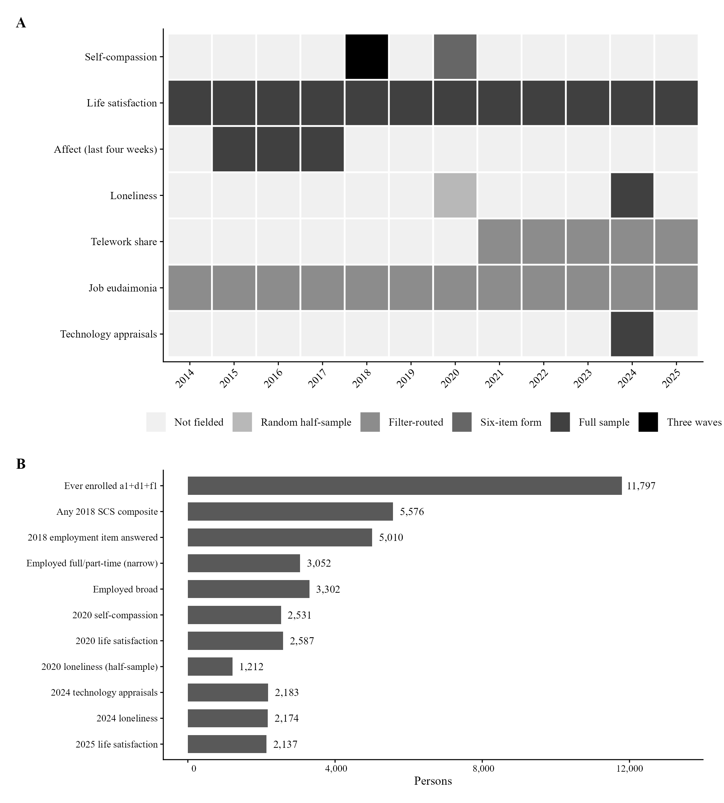
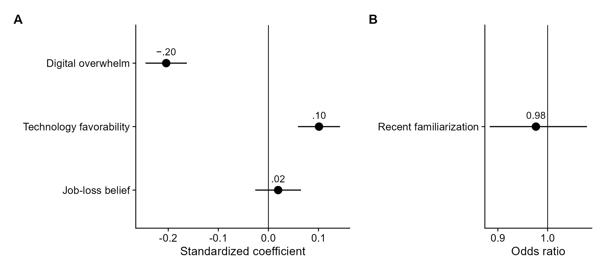

The evidence
Later levels, and how the scale scored.
The 2018 score’s associations with later levels, and how the short form scored. Bayes factors, out-of-fold prediction, the two-factor split, and the neuroticism-adjusted models were added at the reporting stage and are labeled as such in the paper.
Design timeline

Life satisfaction at the 2020 knot
The 2018 trait was associated with a higher 2020 level (b = 2.16, 95% CI [1.40, 2.91], β = .14). Life satisfaction then fell 6.22 points (0–100) across 2020–2021. The implied change was −6.02 at −1 SD of the trait and −6.42 at +1 SD; those 95% intervals overlap.
2024 technology appraisals
Controlling for prepandemic well-being, age, education, and technology affinity, the trait was associated with lower digital overwhelm (β = −.20) and more favorable appraisals (β = .10).

The scoring result
- Positive and negative item sets correlated only r = .32–.39. The hypothesized trait factor correlated r = .98 with reverse-scored self-critical items and r = .38 with self-caring items.
- Full-sample component models (estimation N = 3,052): self-critical composite β = −.297 for 2024 loneliness and β = −.213 for overwhelm. Self-caring items entered simultaneously: β = .010 and near zero.
- Six-item Big Five Inventory–2 neuroticism control (2017; n = 1,616 for that check): loneliness β = −.239, overwhelm β = −.169. The two-item BFI-10 control is weaker (α ≈ .47–.54) and is not the better estimate of residual confounding.
- Out-of-fold nested cross-validation: the 2018 composite improved prediction of 2024 loneliness (ΔR² = .036) and, more modestly, overwhelm (ΔR² = .008).